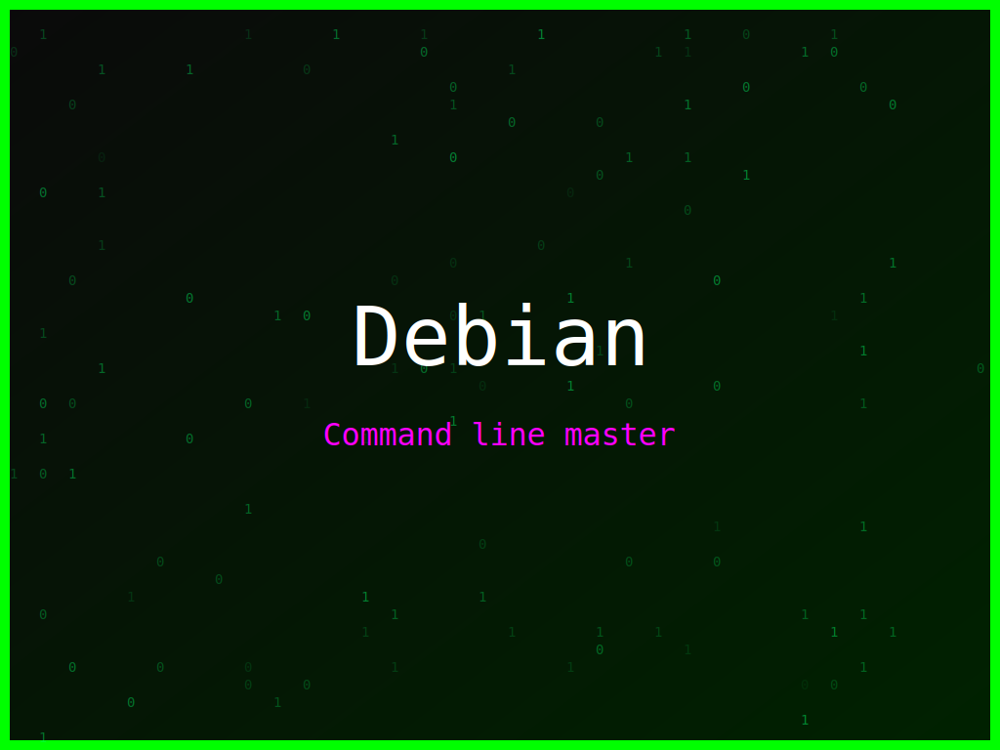

<section class="post-content">


    <div class="details-container">
       
        
        <ul class="details-list">
            <li><strong>Autor:</strong> piolinux</li>
            <li><strong>Descrição:</strong> Wallpaper Debian com a frase icónica 'Keep Calm and Linux On' para os momentos de stress.</li>
            <li><strong>Distro:</strong> Debian</li>
            <li><strong>Frases:</strong> Command line master, Open Source rocks, Keep Calm and Linux On</li>
            <li><strong>Tags:</strong> matrix, colorido</li>
        </ul>
        <a href="../galeria.html">Voltar para a galeria</a>||
        <a href="../wallpaper37.svg" download="wallpaper-debian-a-calma-do-linux.svg">Baixar Wallpaper</a>
    </div>


</section>
